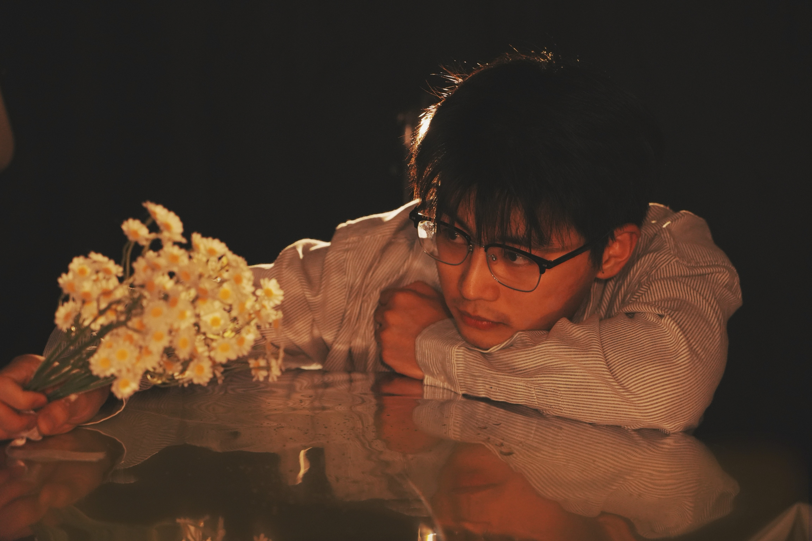
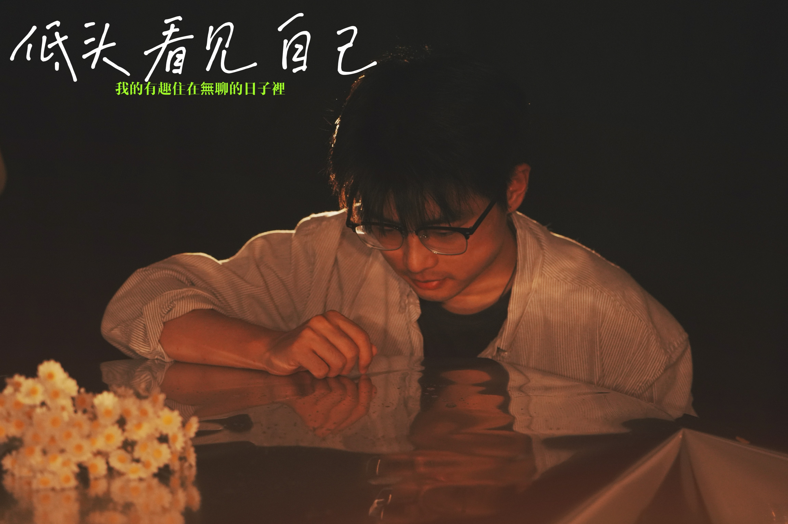
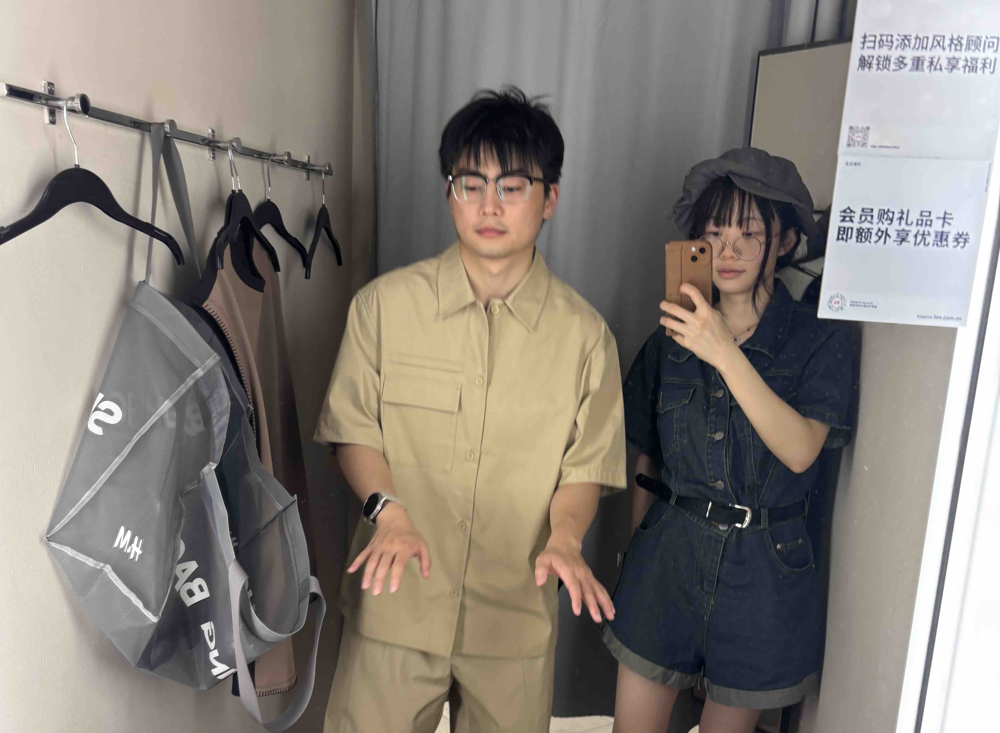
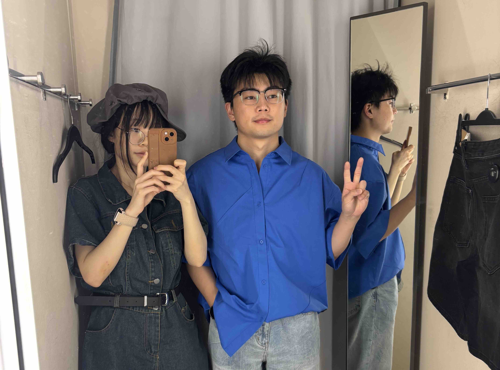
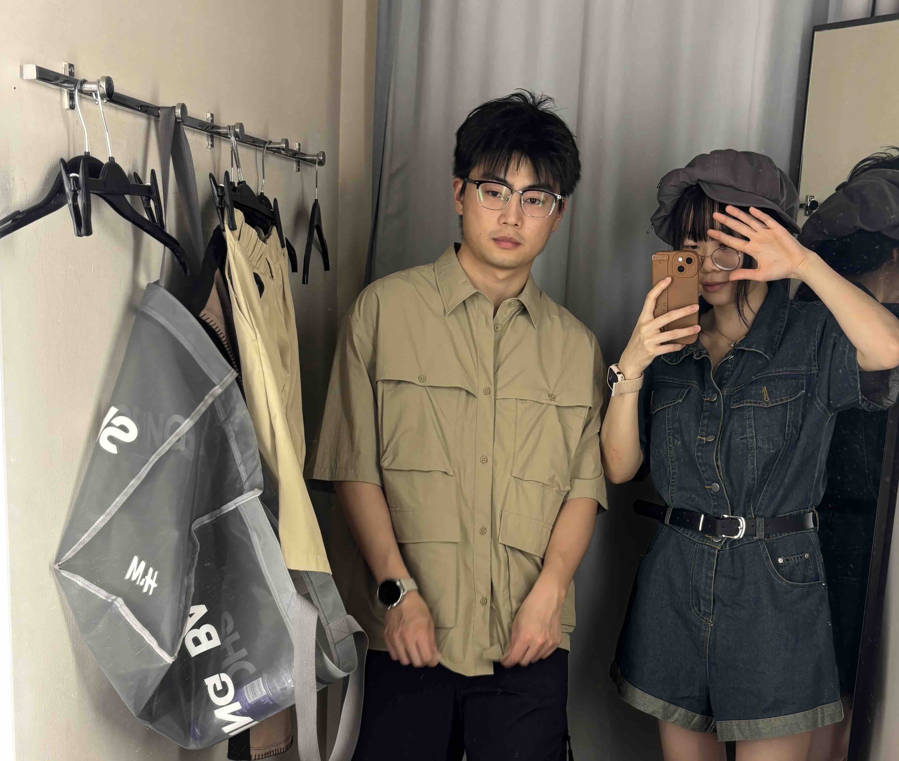

那天我们把仪式感降噪，只留“神性”和“少年感”。不是去证明你像神，而是要记录你认真温柔的样子，刚刚好被光喜欢。


“你抬眼的那一秒，世界把噪点都让位给你了。”
拍摄于 2025-08-01 | 小尹家
那天我们把仪式感降噪，只留“神性”和“少年感”。不是去证明你像神，而是要记录你认真温柔的样子，刚刚好被光喜欢。
“你抬眼的那一秒，世界把噪点都让位给你了。”
拍摄于 2025-08-01 | 小尹家
第二天我们一起去逛街,给狗狗挑皮肤~你在镜子前试了各种风格的衣服：休闲的，正式的，甚至带点不羁的。虽然没买，但我偷偷记下了你的眼神和姿态。
最后我挑了一件送给你——第一次，我把心意变成挂在你身上的布料。P.S.那件无袖的背心，有点色气，让我可以直接看到你粉嫩的小豆豆。我不回避，我就是喜欢。
  你说：‘这样会不会太大胆？’
我笑：‘大胆点，我喜欢看。’你看着镜子说：‘感觉不像我。’
我回答：‘无论哪一面，都是我心里的你。’你问：‘会不会太暴露？’
我说：‘那就让小尹独享的这一面。’拍摄于 2025-08-02 | 世纪汇